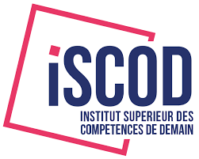
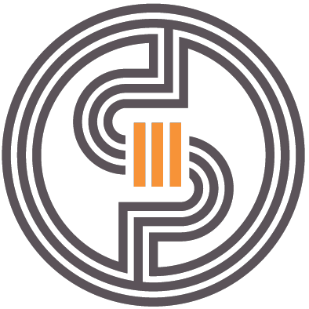
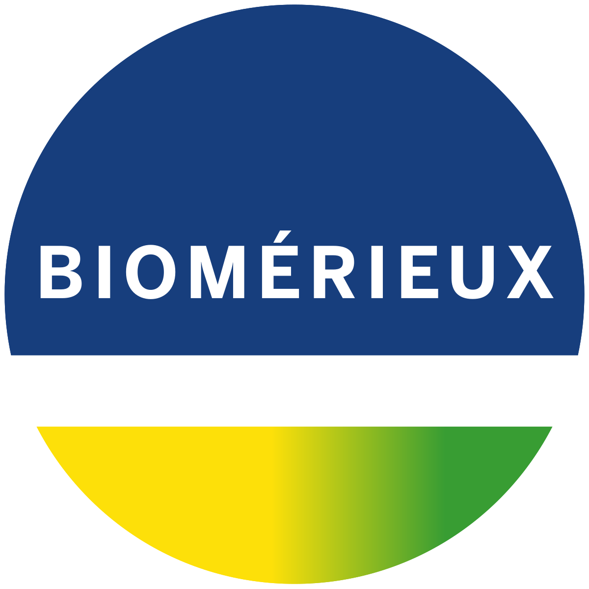

About

Ingénieur IA / Data Scientist
Salut 👋 je suis Mounir ROMANI diplômé d'un double master en Intelligence Artificielle et
en Data Science, avec une forte appétence pour les sujets techniques et un esprit analytique.
Prêt à repousser les frontières de l'innovation.
N'hésitez pas à me contacter si vous avez des questions ou si vous souhaitez discuter d'opportunités professionnelles :
- Numéro tél: +33 772423141
- Adresse: Nanterre, France
- Mobilité: Internationale
- Email: mounirromani8@gmail.com
- LinkedIn: Mounir Akram ROMANI
- GitHub: Mounir Akram ROMANI
Skills
Durant mon parcours académique en Intelligence Artificielle et Data Science,
j’ai développé une solide maîtrise des mathématiques, des statistiques et des outils essentiels du domaine,
tels que Python (NumPy, Pandas, Matplotlib, PyTorch, TensorFlow),
SQL, OpenCV, YOLO et Power BI. Ces compétences m’ont permis de concevoir, analyser
et traiter des données complexes ainsi que de développer des modèles prédictifs et des solutions de vision par ordinateur.
J’ai ensuite consolidé ces compétences au cours de mes expériences professionnelles, notamment en tant qu’ingénieur IA & Data Science chez BioMérieux.
J’y ai travaillé sur des projets de vision par ordinateur, l’annotation et le prétraitement de données,
le déploiement de modèles (YOLO, Cellpose-SAM) pour la détection d’anomalies, ainsi que l’automatisation des pipelines de traitement de données en temps réel avec Dagster.
J’ai également développé des interfaces web (Streamlit) pour la visualisation en temps réel des anomalies et des logs détaillés.
Lors de mes précédents stages en R&D et vision par ordinateur, j’ai conçu des algorithmes d’apprentissage profond pour la classification d’images,
collecté et annoté des datasets, et intégré des modèles dans des logiciels d’analyse vidéo.
Ces expériences m’ont permis de renforcer mon expertise technique tout en développant ma compréhension des enjeux métier
et ma capacité à proposer des solutions data-driven adaptées. Passionné par l’innovation et la vision par ordinateur,
je souhaite contribuer à des projets ambitieux où mes compétences en IA et en traitement de données pourront avoir un impact concret.
Career
Dans cette section, je vous présente mon parcours académique ainsi que mes expériences professionnelles. Mon parcours, alliant enseignement, recherche universitaire et missions en entreprise, m’a permis de mettre en pratique les concepts théoriques acquis au cours de mes études. Ces expériences variées et enrichissantes ont contribué au développement de mon expertise technique, tout en renforçant ma capacité à travailler en équipe et à gérer des projets de manière efficace.
Formations
 Master Chef de projet en Intelligence Artificielle
⏳ 2024 - 2025
🏢 ISCOD - Paris
➤ Cours suivis :
Machine Learning & IA avancée •
Analyse et visualisation de données (Python, Power BI) •
SQL & NoSQL •
Déploiement d’applications et API Python •
Algorithmie avancée & Statistiques •
➤ Compétences acquises :
Conception et pilotage de projets IA •
Développement de modèles prédictifs •
Analyse et visualisation de données complexes •
 Master Signal,Image et Apprentissage automatique
⏳ 2022 - 2024
🏢 Université Toulouse III - Paul Sabatier
➤ Cours suivis :
Traitement d'images •
Traitement de signal avancé •
Modélisation et optimisation •
Statistiques avancées •
Machine Learning & Deep Learning
➤ Compétences acquises :
Analyser et prétraiter des signaux et images •
Appliquer des méthodes de modélisation et optimisation sur des données réelles •
Concevoir et entraîner des modèles ML/DL •
Résoudre des problèmes complexes en utilisant des techniques statistiques avancées •
Intégrer les résultats dans des projets pratiques et pipelines de traitement
 Assistant Data Scientist - Stage
Assistant Data Scientist - Stage
⏳ Mars 2019 - Aout 2019
🏢 Laboratoire de recherche – Université de Tlemcen
En tant qu’Assistant Data Scientist au Laboratoire de recherche de l’Université de Tlemcen, j’ai travaillé sur le traitement et l’analyse de signaux audio (MFCC) pour la classification automatique des pleurs de bébé à l’aide de réseaux de neurones convolutifs (CNN). J’ai également développé une application mobile et intégré le système dans un environnement embarqué (Raspberry Pi) pour permettre l’exploitation opérationnelle du modèle.
Mes responsabilités principales comprenaient :
- L’acquisition et prétraitement des signaux audio pour la création de datasets fiables
- Le développement de modèles CNN pour la classification automatique des pleurs
- Le développement d’une application mobile pour l’exploitation du modèle
- L’intégration dans un système embarqué (Raspberry Pi) pour un usage opérationnel
Licence Energie,Eléctronique,Automatique
⏳ 2016 - 2019
🏢 Université des Sciences et de la Technologie de Telemcen
➤ Cours suivis :
Électronique et circuits numériques •
Systèmes automatisés et contrôle •
Traitement du signal •
Programmation et algorithmique •
Mesures, instrumentation et analyse de données
➤ Compétences acquises :
Prétraitement et analyse de signaux •
Conception de systèmes automatisés et circuits électroniques •
Implémentation d’algorithmes pour l’analyse de données techniques •
Exploitation de mesures et instrumentation pour extraire des informations pertinentes •
Experiences professionnelles
 Ingénieur IA & Data Science- Alternance
⏳ Septembre 2024 - Octobre 2025
🏢 bioMérieux groupe - Grenoble
En tant qu’Ingénieur IA & Data Science chez BioMérieux, ma mission principale consistait à automatiser le traitement des données médicales. J’ai conçu et déployé des pipelines automatisés avec Dagster permettant de détecter l’arrivée de nouvelles données dans un bucket AWS S3, de déclencher automatiquement les traitements, de sauvegarder les résultats et de les rendre accessibles pour l’exploration et la visualisation en temps réel via une application web développée avec Streamlit.
Mes responsabilités incluaient :
- La détection automatique des nouvelles données dans S3 et le déclenchement des pipelines de traitement
- Le déploiement de modèles de vision par ordinateur (YOLO, Cellpose-SAM) pour l’analyse des images
- La mise en place de dashboards et d’outils web pour la visualisation et l’exploration des résultats
- L’optimisation et supervision des pipelines pour garantir leur fiabilité et performance
Ingénieur R&D en développement logiciel – Stage
⏳ Mars 2024 - Août 2024
🏢 Certis Therapeutics - Bordeaux
En tant qu’Ingénieur R&D en développement logiciel chez Certis Therapeutics, j’ai travaillé sur le développement et le déploiement d’un algorithme de rétrocontrôle de générateur laser pour le traitement focal guidé par IRM. J’ai également conçu une interface logicielle et procédé à la validation et aux tests en conditions réelles pour garantir la fiabilité et la performance du système.
Mes responsabilités principales comprenaient :
- L’implémentation de l’algorithme en C++ pour le contrôle précis du générateur laser
- La conception et développement d’une interface logicielle adaptée aux besoins des utilisateurs
- La validation et tests en conditions réelles pour assurer la performance et la sécurité du dispositif
- La documentation technique et le suivi de l’intégration du système
Ingénieur R&D en Vision par Ordinateur – Stage
⏳ Mai 2023 - Août 2023
🏢 Cerema - Bordeaux
En tant qu’Ingénieur R&D en Vision par Ordinateur chez Cerema, j’ai développé des modèles d’apprentissage profond pour la détection et la classification automatique des usagers vulnérables en milieu urbain. J’ai collecté et annoté des jeux de données, optimisé et calibré des algorithmes de vision par ordinateur, et intégré ces modèles dans un logiciel d’analyse vidéo pour faciliter leur exploitation.
Mes responsabilités principales comprenaient :
- Le développement et l’optimisation de modèles d’apprentissage profond pour la détection d’usagers vulnérables
- La collecte et annotation de datasets pour constituer des données fiables et représentatives
- L’optimisation et calibration des algorithmes de vision par ordinateur pour améliorer précision et performance
- L’intégration des modèles dans un logiciel d’analyse vidéo pour une exploitation opérationnelle
Assistant Data Scientist - CDI
⏳ janvier 2020- juin 2022
🏢 Laboratoire de recherche – Université de Tlemcen
En tant qu’Assistant Data Scientist – Imagerie Médicale au laboratoire de recherche de l’Université de Tlemcen, mon rôle consistait à préparer et annoter des jeux de données médicales, prétraiter des images et suivre les modèles d’IA pour des tâches de segmentation et de classification. J’ai également contribué à la rédaction des rapports de performance et collaboré avec les data scientists et radiologues pour assurer la qualité et la pertinence des analyses.
Cette expérience m’a permis de développer :
- La préparation et annotation précise de données complexes
- Le prétraitement et suivi de modèles IA pour la segmentation et classification d’images
- La collaboration efficace avec une équipe pluridisciplinaire
- La rigueur et la précision dans l’analyse et la documentation des résultats
Dans le but de lutter contre les inégalités éducatives et la création de liens solidaires entre campus et quartiers populaires, j'accompagne avec du mentorat des jeunes en difficulté

Association AFEV
Mentor de jeunes en difficulté
Ces lettres de recommandation témoignent de la qualité de mon travail, de mon sérieux et de mon engagement professionnel au sein des différentes structures où j’ai évolué.

Lettre de recommandation
Projects
Dans cette section, je vous présente les projets auxquels j'ai participé et qui ont contribué à
développer mes compétences et mon expertise dans le domaine. Ces projets ont été réalisés dans le cadre de mes
études.
Ils couvrent une large gamme de domaines et de technologies, et m'ont permis de mettre en pratique mes connaissances et
de développer de nouvelles compétences, vous trouverez plus de détails sur mon dépôt GitHub
- All
- Python
- Dashbord & DB
- Others
Création de Dashboard des ventes d'un distributeur électroménager
Déscription du projet :
Création de
Dashboard et analyse des ventes d'une société de distribution
d'articles électroménager et sports pour l'année 2020 & 2021 sur la base de deux
fichiers Excel . Relations visualisées sur le Dashboard : Vente par Date, Quantité vendue par
Clients, Quantité vendue par Trimestre, Quantité vendue par Produit, Vente par Responsable de compte, Totale
quantité
vendue, Totale des ventes en €. Filtres réalisés sur Clients, Pays et Années (2020 ou 2021)
Classification des mails spams/hams
Déscription du projet :
Le but de ce projet est de réaliser une classification de SMS pour détecter si un message est spam ou ham. Le projet utilise des techniques de Machine Learning et NLP avec une interface web Streamlit.
Interface de chat avec LLM Gemma via Ollama
Description du projet :
Ce projet consiste à créer une application web interactive avec Streamlit permettant de discuter avec le modèle de langage Gemma exécuté localement via Ollama.
L'application inclut :
- Interface type ChatGPT avec historique des messages
- Bulles de chat distinctes pour l'utilisateur et le modèle
- Spinner pendant le traitement de la réponse
- Déploiement local gratuit